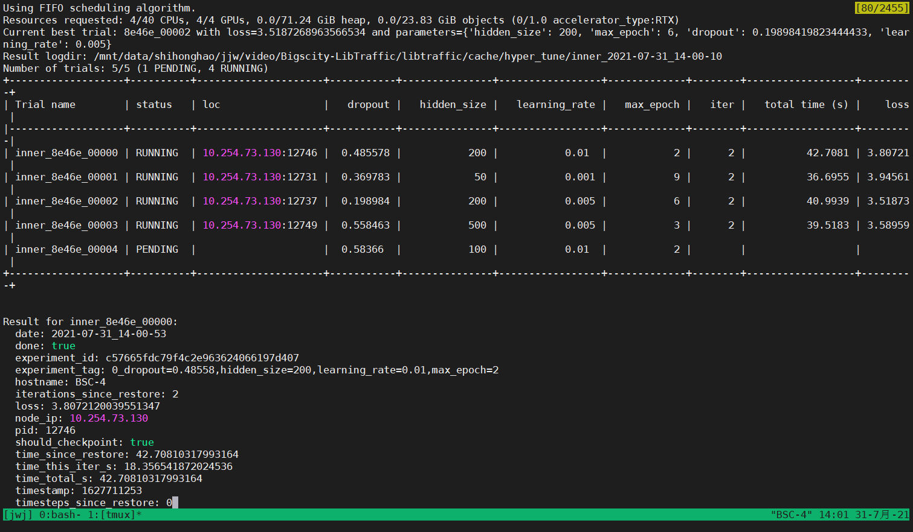
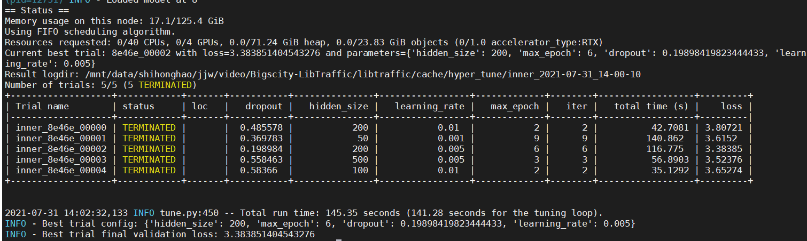

Tuning the model with automatic tool¶
Here we take GRU as an example and use the automated tuning tool (hyper_tune.py) provided in LibCity to optimize its traffic speed prediction performance on the METR_LA dataset.
First, we should look up the hyper-parameters that the GRU may use in the traffic speed prediction task to decide which parameters to adjust.
Look Up Hyper-parameters¶
According to /libcity/config/task_config.json, we can know the class name of each module used by GRU in the traffic speed prediction task.
"GRU": {
"dataset_class": "TrafficStatePointDataset",
"executor": "TrafficStateExecutor",
"evaluator": "TrafficStateEvaluator"
}
According to the configuration file, the data module class used by GRU is TrafficStatePointDataset, the execution module class is TrafficStateExecutor, and the evaluation module class is TrafficStateEvaluator. According to the class name we found, we can easily find the corresponding configuration file in /libcity/config/.
Here, we believe that the hyperparameters of the execution module and the model itself have a greater impact on the performance of the model. Therefore, we looked up the two configuration files /config/executor/TrafficStateExecutor.json and /config/model/traffic_state_pred/GRU.json. After checking, we decided to adjust the four hyperparameters of learning rate learning_rate, maximum training epoch max_epoch, hidden layer dimension hidden_size, and dropout rate dropout.
Writing Tuning Config File¶
The hyper_tune.py script requires the user to write a tuning configuration file to specify the hyperparameters to be adjusted and the corresponding search space. According to the meaning of the parameters to be adjusted, we set the search space as:
For the learning rate parameter, it should generally be a value ending in 1 or 5, such as
0.01or0.05. Therefore, the corresponding search space should be a discrete set of categorical variables, taking[0.01, 0.005, 0.001]as an example.For the maximum training epoch, its value should be an integer. Therefore, the corresponding search space can be set as an integer space that obeys the uniform distribution of
U(2, 10).For the hidden layer dimension parameter, it needs to be an integer and generally a value divisible by 10. Therefore, the corresponding search space should be the same as the learning rate parameter, take
[50, 100, 200, 500]as an example.For the dropout rate, it should be a floating point number between
[0,1). Therefore, the corresponding search space can be a real number space that obeys the uniform distribution ofU(0.1, 0.6).
According to the above design, we can write the following configuration file sample_space_file.json:
(The file should be stored in the project root directory, at the same level as
hyper_tune.py)For more parameter space information, please refer to document.
{
"learning_rate": {
"type": "choice",
"list": [0.01, 0.005, 0.001]
},
"max_epoch": {
"type": "randint",
"lower": 2,
"upper": 10
}
"hidden_size": {
"type": "choice",
"list": [50, 100, 200, 500]
},
"dropout": {
"type": "uniform",
"lower": 0.1,
"upper": 0.6
}
}
Execute hyper_tune.py¶
After ensuring that sample_space_file.json is correctly placed in the project root directory, we can run the following script to automatically tune parameters:
python hyper_tune.py --task traffc_state_pred --model GRU --dataset METR_LA --space_file sample_space_file
After running the command, the script will sample the corresponding parameter values from the search space, and perform model training and verification. After the all samples’ verification is completed, the script will output the best parameter combination on the terminal.
(Currently the script only supports the loss of the model on the validation set as the performance evaluation metrics)
For more command line parameters of the script, please refer to document.
The following figures are screenshots of the running process:

The program will output the sampled parameter combination to the terminal and display the running status of each thread.

The program will output the best combination of parameters to the terminal.